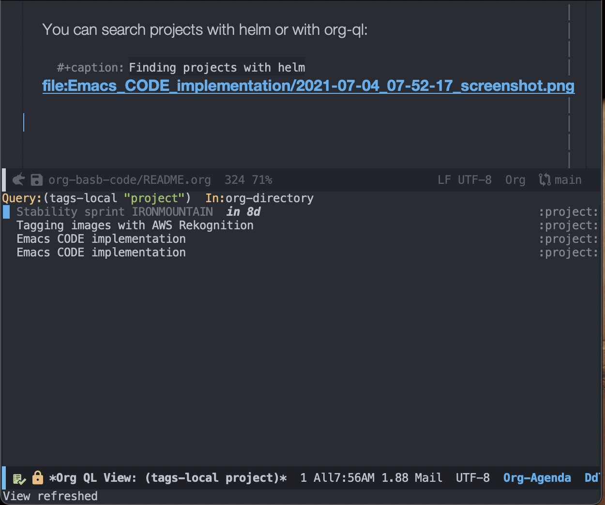

Emacs CODE implementation
Table of Contents
1 CODE implementation
1.1 How to work with this guide?
1.2 Prerequisites
1.2.1 org-roam
GitHub - org-roam/org-roam: Rudimentary Roam replica with Org-mode
This guide uses org-roam as the central tool to manage your notes.
(setq org-roam-v2-ack t) (use-package org-roam :ensure t :pin "melpa-stable")
1.2.2 Pandoc
sudo apt install pandoc
brew install pandoc
Ensure that Pandoc is in your path.
pandoc --version
pandoc 2.14.0.2 Compiled with pandoc-types 1.22, texmath 0.12.3, skylighting 0.10.5.1, citeproc 0.4.0.1, ipynb 0.1.0.1 User data directory: /Users/renat.galimov/.local/share/pandoc Copyright (C) 2006-2021 John MacFarlane. Web: https://pandoc.org This is free software; see the source for copying conditions. There is no warranty, not even for merchantability or fitness for a particular purpose.
1.2.3 straight.el
For this guide, we will be using straight.el as your package manager.
(defvar bootstrap-version) (let ((bootstrap-file (expand-file-name "straight/repos/straight.el/bootstrap.el" user-emacs-directory)) (bootstrap-version 5)) (unless (file-exists-p bootstrap-file) (with-current-buffer (url-retrieve-synchronously "https://raw.githubusercontent.com/raxod502/straight.el/develop/install.el" 'silent 'inhibit-cookies) (goto-char (point-max)) (eval-print-last-sexp))) (load bootstrap-file nil 'nomessage))
1.2.4 Org-roam
Obviously, we need org-roam itself
(setq org-roam-v2-ack t) (use-package org-roam :ensure t :pin "melpa-stable" :bind (("C-c n l" . #'org-roam-buffer-toggle) ("C-c n f" . #'org-roam-node-find) ("C-c n v" . #'org-roam-node-visit) ("C-c n i" . #'org-roam-node-insert)))
1.3 Capture
Emacs is a text editor.
1.3.1 Capture documents
- Capture targets:
- E-books
- Documents
- Videos
- Audios
- Images
To capture we use Pandoc and org-pandoc-import
(use-package org-pandoc-import :straight (:host github :repo "tecosaur/org-pandoc-import" :files ("*.el" "filters" "preprocessors")) :bind (("C-c n o" . org-pandoc-import-as-org)))
Pandoc can convert almost any text format to org-mode representation. One of the current drawbacks - it cannot import online web pages.
1.3.2 Capture web-pages
- org-web-tools
org-web-tools offers
org-web-tools-read-url-as-orgfunction, which can download an URL to an org buffer.(use-package org-web-tools :ensure t :bind (("C-c n u" . org-web-tools-read-url-as-org)))
Often, downloaded files need manual cleanup.
- Firefox web-clipper and Pandoc
An alternative approach is to use a web-clipper and Pandoc.
- Open the web article in your browser and activate a web-clipper. I use Firefoxes built-in one.
- Save entire HTML into a file.
Convert the HTML with Pandoc
pandoc -f html -t org <source-file>.html -o <target-file>.org
The resulting file might require some cleanup, but the quality of the output is the best among other methods.
1.3.4 Finding your own records
Crawling over your own notes is a key part of the project workflow.
Below I summarized information about all full-text search engines I found for org-mode.
Depending on your own need you might select one or multiple of them.
Unfortunately, I didn't find any ideal solution for a full-text search yet. Packages that make better sorting are slower than packages that give results fast but in a random order.
- Org full-text search table
- Requested features:
- helm or counsel integration.
- live search.
- result previewing support.
- a key-binding to capture results into currently clocked org file.
- results ordering support
- Headlines
- Summary
- Hightlight
- large file-sets support
ITEM FRONTEND SPEED SORT Org-roam Full-text search ripgrep (helm-rg) helm ivy fast nil helm-org-rifle helm slow t deft helm fast nil org-ql helm slow recoll helm ivy fast nil org-fts ivy fast org-agenda search - ripgrep (helm-rg)
GitHub - cosmicexplorer/helm-rg: ripgrep is nice Now I use it as a default text search engine.
brew install ripgrep
(use-package helm-rg :ensure t :init (defun helm-rg-roam-directory (&optional query) "Search with rg in your roam directory, QUERY." (interactive) (let ((helm-rg-default-directory org-roam-directory)) (helm-rg query nil))) :bind (("C-c n R" . helm-rg-roam-directory)))
- helm-org-rifle
GitHub - alphapapa/org-rifle: Rifle through your Org-mode buffers and acquire your target
This one is good. It gives you an idea about the context. But it's not ordering the data by the highlights.
I find org-rifle too slow at the moment. But its output is exacly what I want.
(use-package helm-org-rifle :ensure t :init (defun org-rifle-roam-directory () (interactive) (helm-org-rifle-directories org-roam-directory)) :bind (("C-c n s" . org-rifle-roam-directory)))
- deft
Helm implementation didn't work for me. So I set a default version here.
One of the drawbacks here is that you can't see the text you matched. From my point of view - helm-rg gives more precise information about the context.
(use-package deft :ensure t :init (setq deft-directory org-roam-directory deft-recursive t) :bind (("C-c n d" . deft)) ) ;; (use-package helm-deft ;; :ensure t ;; :straight (:host github ;; :repo "dfeich/helm-deft" ;; :files ("*.el")) ;; :init ;; (setq helm-deft-dir-list `(,org-roam-directory) ;; helm-deft-extension '("org")) ;; :bind (("C-c n d" . helm-deft)))
- org-ql
GitHub - alphapapa/org-ql: An Org-mode query language, including search commands and saved views
Doesn't look suitable for large filesets, but helm implementation is good for medium-sized collections.
(use-package org-ql :ensure t :init (setq org-ql-search-directories-files-recursive t)) (use-package helm-org-ql :ensure t :init (setq helm-org-ql-recursive-paths t) :bind (("C-c n q" . helm-org-ql-org-directory)))
- recoll
GitHub - emacs-helm/helm-recoll: helm interface for the recoll desktop search tool. I found recoll being to hard to set up. I wasn't able to get it working on MacOS.
- org-fts
microfts/elisp at main · zot/microfts · GitHub
- It didn't work on MacOS from scratch.
- I tried to compile its binary manually but that didn't work either.
- This one looks promising. Let's keep an eye on it.
- org-agenda search
- Not trying this for now because agenda wants to open all its files for search.
- Requested features:
1.4 Organize
1.4.1 Org-mode tags
This is a default method. You just tag your projects with a
project tag, areas with an area tag and so on.
You can search projects with helm or with org-ql:
Figure 1: Finding projects with helm

Figure 2: Finding projects with org-ql
1.4.2 Org-roam links
An alternative to use Org-roam references as tags.
You create notebooks called: projects, areas, resources and insert
a link to the target record according to where it belongs.
Figure 3: Links to an area within notes
If you go to the areas note and call org-roam-buffer-toggle, you will see
a backlink to you note in the side buffer.

Figure 4: Backlinks to all areas in the side buffer
1.5 Distill
1.5.1 Progressive summarization
- Make org-emphasize multi-linear
To bypass the limit of two lines for org-emphasize marks enable the code below.
;; Make org-emphasis to work on up to 10 lines selection. (setcar (nthcdr 4 org-emphasis-regexp-components) 10) (org-set-emph-re 'org-emphasis-regexp-components org-emphasis-regexp-components)
- Highlighting
Highlighting is a key part of progressive summarization. Here I will be highlighting with
highlight.eland enriched mode. If you don't want to put your text file into the enriched text mode, you can useorg-emphasizeinstead of functions provided here.- highlight.el
When working with plain text buffers, like org-mode or markdown, you can use enriched text mode with the
highlightlibrary to mark the text.;; If you get errors saying somethign about facemenu, try ;; uncommenting this. ;; (setq facemenu-menu nil) (use-package highlight :ensure t :init (defun hlt-general() (interactive) (unless (bound-and-true-p enriched-mode) (enriched-mode t)) (hlt-highlight-region (region-beginning) (region-end) 'highlight)) :bind (("C-c n h" . hlt-general) ("C-c n H" . hlt-unhighlight-region)))
- org-capture a region ATTACH
To keep track of highlighted notes we will use
org-capture.;; Use =org-capture f= to put a link to the text you selected.into an ;; org entry with the current timer enabled. (defun r/org-capture-get-selected-text () (with-current-buffer (org-capture-get :original-buffer) (string-trim (replace-regexp-in-string "\n" " " (cond ((eq major-mode 'pdf-view-mode) (pdf-info-gettext (pdf-view-current-page) (car (pdf-view-active-region)))) (t (buffer-substring-no-properties (region-beginning) (region-end)))))))) (defun r/org-capture-get-link (path) (with-current-buffer (org-capture-get :original-buffer) (cond ((eq major-mode 'pdf-view-mode) (switch-to-buffer (org-capture-get :original-buffer)) (org-pdftools-get-link)) (t (concat path "::" (r/org-capture-get-selected-text)))))) (add-to-list 'org-capture-templates '("f" "Curently watched" item (clock) "%(r/org-capture-get-selected-text) [[%(r/org-capture-get-link \"%F\")][↗]]%?" :unnarrowed t)) ;; The code below automatically highlights the region we captured (defun do-highlight-on-capture () "Highlight selected region of the buffer you were in at capture." (save-excursion (with-current-buffer (plist-get org-capture-plist :original-buffer) (cond ((eq major-mode 'pdf-view-mode) (switch-to-buffer (org-capture-get :original-buffer)) (pdf-annot-add-highlight-markup-annotation (car (pdf-view-active-region)))) (t (hlt-general)))))) (defun highlight-on-capture () (when (equal (plist-get org-capture-plist :key) "f") (do-highlight-on-capture))) (add-hook 'org-capture-after-finalize-hook #'highlight-on-capture)
This is my basic marking mechanism. Whenever I'm reading an article in Emacs (transformed to an org-mode or markdown file), I click
C-c fto insert an entry to the notebook I'm currently on.
Figure 5: Highlighting on capture demo
- highlight.el
1.5.2 Working with PDF files ATTACH
(use-package pdf-tools :ensure t :straight (:host github :repo "matthew-piziak/pdf-tools" :files ("lisp/*.el" "server")) :init (add-to-list 'auto-mode-alist '("\\.pdf\\'" . pdf-view-mode)) (setq pdf-info-epdfinfo-program (locate-file "straight/repos/pdf-tools/server/epdfinfo" `(,straight-base-dir)))) (use-package org-pdftools :ensure t :init (org-pdftools-setup-link))
Now, capturing with C-c c f will create a highlight in the
PDF file and add a link to an org-mode node you're currently
working on.

Figure 6: Highlighting text in a PDF document
1.6 Express
This area is too large to cover it in this guide. If you're new to org-mode consult
Exporting and publishing sections of the org manual.
2 Emacs config
;; [[[[file:~/projects/org-basb-code/README.org::install-straight-el][install-straight-el]]][install-straight-el]] (defvar bootstrap-version) (let ((bootstrap-file (expand-file-name "straight/repos/straight.el/bootstrap.el" user-emacs-directory)) (bootstrap-version 5)) (unless (file-exists-p bootstrap-file) (with-current-buffer (url-retrieve-synchronously "https://raw.githubusercontent.com/raxod502/straight.el/develop/install.el" 'silent 'inhibit-cookies) (goto-char (point-max)) (eval-print-last-sexp))) (load bootstrap-file nil 'nomessage)) ;; install-straight-el ends here ;; [[[[file:~/projects/org-basb-code/README.org::install-org-roam][install-org-roam]]][install-org-roam]] (setq org-roam-v2-ack t) (use-package org-roam :ensure t :pin "melpa-stable") ;; install-org-roam ends here ;; [[[[file:~/projects/org-basb-code/README.org::install-org-pandoc-import][install-org-pandoc-import]]][install-org-pandoc-import]] (use-package org-pandoc-import :straight (:host github :repo "tecosaur/org-pandoc-import" :files ("*.el" "filters" "preprocessors")) :bind (("C-c n o" . org-pandoc-import-as-org))) ;; install-org-pandoc-import ends here ;; [[[[file:~/projects/org-basb-code/README.org::install-org-web-tools][install-org-web-tools]]][install-org-web-tools]] (use-package org-web-tools :ensure t :bind (("C-c n u" . org-web-tools-read-url-as-org))) ;; install-org-web-tools ends here ;; [[[[file:~/projects/org-basb-code/README.org::install-helm-rg][install-helm-rg]]][install-helm-rg]] (use-package helm-rg :ensure t :init (defun helm-rg-roam-directory (&optional query) "Search with rg in your roam directory, QUERY." (interactive) (let ((helm-rg-default-directory org-roam-directory)) (helm-rg query nil))) :bind (("C-c n R" . helm-rg-roam-directory))) ;; install-helm-rg ends here ;; [[[[file:~/projects/org-basb-code/README.org::install-org-rifle][install-org-rifle]]][install-org-rifle]] (use-package helm-org-rifle :ensure t :init (defun org-rifle-roam-directory () (interactive) (helm-org-rifle-directories org-roam-directory)) :bind (("C-c n s" . org-rifle-roam-directory))) ;; install-org-rifle ends here ;; [[[[file:~/projects/org-basb-code/README.org::install-deft][install-deft]]][install-deft]] (use-package deft :ensure t :init (setq deft-directory org-roam-directory deft-recursive t) :bind (("C-c n d" . deft)) ) ;; (use-package helm-deft ;; :ensure t ;; :straight (:host github ;; :repo "dfeich/helm-deft" ;; :files ("*.el")) ;; :init ;; (setq helm-deft-dir-list `(,org-roam-directory) ;; helm-deft-extension '("org")) ;; :bind (("C-c n d" . helm-deft))) ;; install-deft ends here ;; [[[[file:~/projects/org-basb-code/README.org::install-org-ql][install-org-ql]]][install-org-ql]] (use-package org-ql :ensure t :init (setq org-ql-search-directories-files-recursive t)) (use-package helm-org-ql :ensure t :init (setq helm-org-ql-recursive-paths t) :bind (("C-c n q" . helm-org-ql-org-directory))) ;; install-org-ql ends here ;; [[[[file:~/projects/org-basb-code/README.org::increase-org-emphasis-limit][increase-org-emphasis-limit]]][increase-org-emphasis-limit]] ;; Make org-emphasis to work on up to 10 lines selection. (setcar (nthcdr 4 org-emphasis-regexp-components) 10) (org-set-emph-re 'org-emphasis-regexp-components org-emphasis-regexp-components) ;; increase-org-emphasis-limit ends here ;; [[[[id:1FD14535-77E8-4296-9BC9-A72DB1CB7E0F][org-capture a region]]][highlight-capture]] ;; Use =org-capture f= to put a link to the text you selected.into an ;; org entry with the current timer enabled. (defun r/org-capture-get-selected-text () (with-current-buffer (org-capture-get :original-buffer) (string-trim (replace-regexp-in-string "\n" " " (cond ((eq major-mode 'pdf-view-mode) (pdf-info-gettext (pdf-view-current-page) (car (pdf-view-active-region)))) (t (buffer-substring-no-properties (region-beginning) (region-end)))))))) (defun r/org-capture-get-link (path) (with-current-buffer (org-capture-get :original-buffer) (cond ((eq major-mode 'pdf-view-mode) (switch-to-buffer (org-capture-get :original-buffer)) (org-pdftools-get-link)) (t (concat path "::" (r/org-capture-get-selected-text)))))) (add-to-list 'org-capture-templates '("f" "Curently watched" item (clock) "%(r/org-capture-get-selected-text) [[%(r/org-capture-get-link \"%F\")][↗]]%?" :unnarrowed t)) ;; The code below automatically highlights the region we captured (defun do-highlight-on-capture () "Highlight selected region of the buffer you were in at capture." (save-excursion (with-current-buffer (plist-get org-capture-plist :original-buffer) (cond ((eq major-mode 'pdf-view-mode) (switch-to-buffer (org-capture-get :original-buffer)) (pdf-annot-add-highlight-markup-annotation (car (pdf-view-active-region)))) (t (hlt-general)))))) (defun highlight-on-capture () (when (equal (plist-get org-capture-plist :key) "f") (do-highlight-on-capture))) (add-hook 'org-capture-after-finalize-hook #'highlight-on-capture) ;; highlight-capture ends here ;; [[[[file:~/projects/org-basb-code/README.org::setup-highlight-el][setup-highlight-el]]][setup-highlight-el]] ;; If you get errors saying somethign about facemenu, try ;; uncommenting this. ;; (setq facemenu-menu nil) (use-package highlight :ensure t :init (defun hlt-general() (interactive) (unless (bound-and-true-p enriched-mode) (enriched-mode t)) (hlt-highlight-region (region-beginning) (region-end) 'highlight)) :bind (("C-c n h" . hlt-general) ("C-c n H" . hlt-unhighlight-region))) ;; setup-highlight-el ends here ;; [[[[id:B5A87A1B-E0FE-40D6-AC63-AD52DB283C31][Working with PDF files]]][install-pdf-tools]] (use-package pdf-tools :ensure t :straight (:host github :repo "matthew-piziak/pdf-tools" :files ("lisp/*.el" "server")) :init (add-to-list 'auto-mode-alist '("\\.pdf\\'" . pdf-view-mode)) (setq pdf-info-epdfinfo-program (locate-file "straight/repos/pdf-tools/server/epdfinfo" `(,straight-base-dir)))) (use-package org-pdftools :ensure t :init (org-pdftools-setup-link)) ;; install-pdf-tools ends here